Semana 7. JavaScript ES6 y manipulación del DOM
| Asignatura | Programación Web (IF2003) |
| Grupo | 603 de Ingeniería Informática |
| Unidad | Unidad 2. Frontend |
Presentación interactiva de la sesión
Taller del panel de catálogo, paso a paso
1 Lo que vas a lograr
Hasta la semana pasada, tu panel de catálogo era una página que se dibuja una vez y no cambia. Si el productor agrega la panela, la página no se entera: alguien tendría que abrir el archivo, escribir otra tarjeta a mano y volver a publicar. Esta semana cambia eso. Vas a escribir JavaScript que reacciona a lo que hace la persona (un clic, una tecla, un formulario enviado) y modifica la página sin recargarla.
Esta guía se centra en qué hace el navegador por dentro, más que en una lista de métodos, porque el que entiende el mecanismo puede resolver un error que nunca vio, y el que solo copió el código se queda quieto cuando aparece uno nuevo. Por eso cada parte sigue el mismo recorrido: un problema real del proyecto, una predicción tuya antes de ver la respuesta, el modelo mental, el mecanismo paso a paso, el código como herramienta, lo que se rompe y cómo se lee el error, un reto y la conexión con tu proyecto.
Al terminar la guía puedes:
- Explicar qué es el DOM, en qué se diferencia del archivo HTML y por qué un cambio hecho con JavaScript desaparece al recargar.
- Cargar un script sin que
querySelectordevuelvanull, y diagnosticar el error cuando ocurre. - Seleccionar y modificar elementos, crear elementos nuevos y evitar la inyección de HTML.
- Escribir manejadores de eventos, y usar delegación para atender botones que aún no existen.
- Usar
let,const, funciones flecha, plantillas literales, desestructuración,spready los métodosmap,filter,find,reduce,someyeverypara razonar sobre datos. - Estructurar una interfaz con un arreglo de datos y una función
render, en vez de parchar el DOM a mano. - Validar un formulario en el navegador con mensajes útiles, y explicar por qué esa validación no protege nada por sí sola.
- Depurar con
console, el panel Elements, el panel Sources y breakpoints, siguiendo un método: reproducir, aislar, plantear una hipótesis y comprobar. - Construir, en el taller, el panel de catálogo del productor funcionando sin recargar la página: agregar con validación, editar, quitar, marcar agotado, filtrar por texto y ver el total.
Los recuadros Para memorizar reúnen lo poco que conviene saber de memoria. Los recuadros Para razonar reúnen lo que se deduce del mecanismo. Antes de cada respuesta oculta, escribe tu predicción.
Necesitas:
- Las semanas 5 y 6 vistas: HTML5 y CSS3, y el panel de catálogo hecho con Bootstrap o Tailwind.
- Google Chrome o Microsoft Edge (los dos traen las mismas herramientas de desarrollador) y Visual Studio Code con la extensión Live Server.
- Cero JavaScript previo. Se asume que sabes qué es una variable, pero no más.
Cómo abrir las herramientas de desarrollador. Pulsa F12, o Ctrl + Mayús + I. Para ir directo al panel Console, Ctrl + Mayús + J. Se abre un panel con pestañas: Elements, Console, Sources y Network son las cuatro que usas esta semana.
Estructura de archivos. Trabajas con dos archivos en la carpeta de tu proyecto, uno junto al otro:
mi-proyecto/
index.html <- la estructura: formulario, lista, botones
app.js <- el comportamiento: todo el JavaScript de esta semanaAbre siempre la página con Live Server (clic derecho en index.html, “Open with Live Server”), no con doble clic. Live Server sirve la página desde http://127.0.0.1:5500/, y eso evita problemas que verás en la Parte 6 con los módulos de JavaScript.
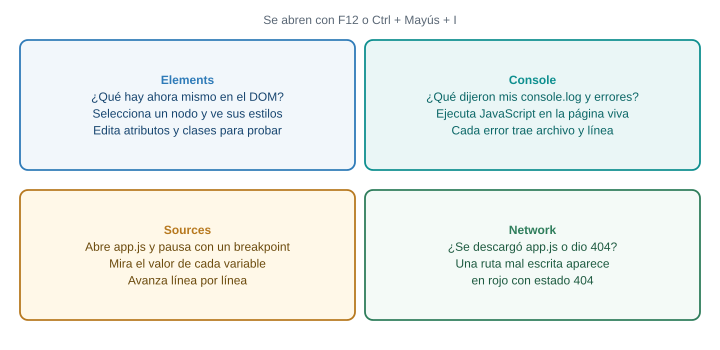
Los cuatro paneles que usarás. Cada uno responde una pregunta distinta, y saber cuál abrir ahorra mucho tiempo.
3 Parte 2. JavaScript y el DOM: dónde y cuándo se ejecuta tu script
El problema real
Quieres que, al cargar el panel, aparezca en la consola la frase “app.js cargó”, para confirmar que tu código se está ejecutando. Parece trivial. Sin embargo, el error más frecuente entre quienes empiezan con JavaScript en el navegador nace aquí: el script corre antes de que existan los elementos que intenta buscar.
Predice primero. Pones <script src="app.js"></script> dentro de <head>, y app.js contiene document.querySelector("#titulo").textContent = "Hola". El h1 con id titulo está más abajo, en el body. ¿Qué ocurre?
Falla con un error en la consola:
Uncaught TypeError: Cannot set properties of null (setting 'textContent')Cuando el parser llega a <script>, se detiene, descarga el archivo, lo ejecuta y solo después sigue leyendo. En ese momento el body todavía no se ha leído. querySelector no encuentra nada y devuelve null. Intentar poner textContent en null provoca el error.
Modelo mental: el parser lee de arriba hacia abajo
El parser HTML trabaja como alguien que lee un libro de principio a fin. Cuando se topa con una etiqueta <script> normal, deja de leer, ejecuta el script y recién entonces continúa. Por eso un script puesto en <head> se ejecuta cuando el body aún no existe.
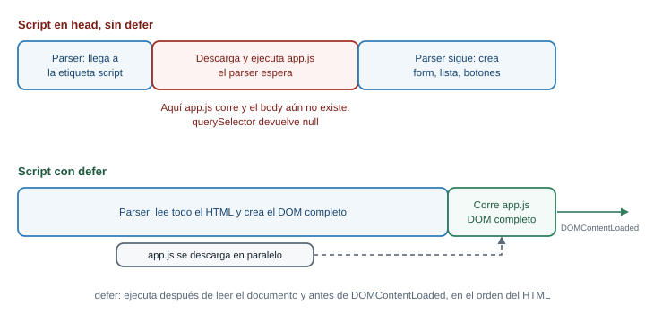
Arriba, un script sin defer en el head detiene el parser y corre con el body vacío. Abajo, con defer, el navegador descarga el script en paralelo y lo ejecuta cuando el documento está completo.
Las tres formas de cargar tu script
| Forma | Cuándo corre | Para qué sirve hoy |
|---|---|---|
<script src="app.js"></script> en el head |
Al leerlo, con el body aún vacío |
Casi nunca; produce el error de arriba |
<script src="app.js"></script> justo antes de </body> |
Cuando el parser ya leyó todo lo anterior | Funciona, y es lo que verás en tutoriales antiguos |
<script src="app.js" defer></script> en el head |
Después de leer todo el documento y antes de DOMContentLoaded |
La forma recomendada: el script se descarga en paralelo y los elementos ya existen |
La tercera es la que usa esta guía. Según MDN, un script con defer se ejecuta después de que termina el análisis del documento y antes del evento DOMContentLoaded, y varios scripts con defer corren en el orden en que aparecen en el HTML. El atributo defer solo tiene efecto en scripts con src; en un script escrito dentro de la propia etiqueta, no hace nada.
También existe async, que ejecuta el script apenas se descarga, sin importar si el DOM está listo. Sirve para scripts independientes (una analítica, por ejemplo) y no para el código que busca tus elementos.
El esqueleto de index.html para toda la semana:
<!DOCTYPE html>
<html lang="es">
<head>
<meta charset="UTF-8">
<meta name="viewport" content="width=device-width, initial-scale=1.0">
<title>Catálogo del productor</title>
<script src="app.js" defer></script>
</head>
<body>
<!-- tu página -->
</body>
</html>defer va en el script del head. Sin src, defer no sirve.
¿Por qué defer arregla el problema? Porque cambia cuándo corre el script; lo que hace queda igual. El error Cannot set properties of null señala que el elemento no existía cuando lo buscaste. La pregunta correcta ante un null es siempre la misma: ¿existía ese elemento en el momento exacto en que corrió esta línea?
La consola: tu primer laboratorio
La consola es un lugar donde escribes una línea de JavaScript, pulsas Enter y el navegador la ejecuta sobre la página abierta, con acceso a su DOM. Ábrela con Ctrl + Mayús + J. Prueba, con cualquier página abierta:
document.titledocument.body.children.lengthLa consola imprime el resultado de la última expresión. Para imprimir algo desde tu propio script usa console.log:
console.log("app.js cargó");Pon esa línea en app.js, guarda, y mira la consola. Si no aparece, el script no se está cargando. Ese es el primer diagnóstico del día: hazlo siempre que algo no responda.
Qué pasa si… el script no carga
Si escribes mal el nombre del archivo (<script src="apps.js" defer>), la consola muestra un error de red, no de JavaScript. En Chrome aparece algo como:
Failed to load resource: the server responded with a status of 404El texto que sigue al 404 cambia según el servidor. El 404 significa “no encontré ese archivo”. La forma más rápida de confirmarlo es el panel Network: recarga la página con ese panel abierto y busca la fila de app.js en rojo. Los errores de red no se arreglan en el código JavaScript, se arreglan en la ruta del src.
Qué pasa si… el mismo nombre se declara dos veces
Si dos scripts de la misma página declaran const productos, el segundo falla:
Uncaught SyntaxError: Identifier 'productos' has already been declaredLos scripts clásicos comparten un único espacio de nombres global. Cuando tengas un solo app.js no te pasa, pero conviene reconocer el mensaje, porque aparece al pegar código de varias fuentes.
Conexión con el proyecto
Todo lo que escribas esta semana va a app.js, y index.html lleva siempre el defer. Si tu proyecto ya tiene un estilos.css o una carga de Bootstrap en el head, no los quites: el JavaScript convive con ellos.
4 Parte 3. Seleccionar elementos
El problema real
El panel tiene una lista de productos y un botón “Agregar producto”. Para que el botón haga algo, primero tu código tiene que encontrarlo en el DOM. Seleccionar es obtener una referencia a un nodo, para poder leerlo o modificarlo después.
Para practicar, usa esta página. Guárdala como index.html con el esqueleto de la Parte 2:
<body>
<h1 id="titulo">Mi catálogo</h1>
<p class="aviso">Hoy hay 4 productos.</p>
<ul id="productos">
<li class="producto">Tomate chonto</li>
<li class="producto">Papa criolla</li>
<li class="producto agotado">Aguacate hass</li>
<li class="producto">Panela</li>
</ul>
<button id="agregar">Agregar producto</button>
</body>Predice primero. Guardas const items = document.querySelectorAll(".producto") y después borras un li con .remove(). ¿Cuánto vale items.length?
Sigue valiendo 4. querySelectorAll devuelve una NodeList estática: una foto del DOM en el momento de la llamada. Si el DOM cambia después, la lista no se actualiza. Si necesitas datos frescos, vuelve a llamar a querySelectorAll.
Los métodos de selección
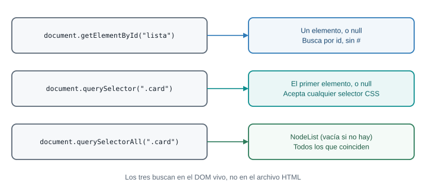
Los tres métodos buscan en el DOM vivo. Lo importante es qué devuelve cada uno cuando no encuentra nada.
const titulo = document.getElementById("titulo"); // un elemento, o null
const primero = document.querySelector(".producto"); // el primero que coincide, o null
const todos = document.querySelectorAll(".producto"); // NodeList (vacía si no hay)getElementById("titulo")busca porid. Se escribe sin#, porque ya sabe que es un id.querySelector(selector)acepta cualquier selector CSS, los mismos que escribiste en la Semana 5:#titulo,.producto,ul > li,li:not(.agotado). Devuelve el primer elemento que coincide.querySelectorAll(selector)devuelve todos los que coinciden, en el orden del documento.
Una ventaja de querySelector: puedes llamarlo sobre un elemento, no solo sobre document, y busca únicamente dentro de él.
const lista = document.querySelector("#productos");
const agotado = lista.querySelector(".agotado"); // solo busca dentro de la lista
console.log(agotado.textContent); // "Aguacate hass"Qué pasa si… no encuentra el elemento
Los dos primeros métodos devuelven null cuando no hay coincidencia. querySelectorAll devuelve una lista vacía, no null. Esa diferencia importa:
const buscado = document.querySelector("#no-existe");
console.log(buscado); // null
buscado.textContent = "x"; // TypeErrorEl mensaje es Uncaught TypeError: Cannot set properties of null (setting 'textContent'). Si en cambio lees una propiedad de null (buscado.textContent), el mensaje es Cannot read properties of null (reading 'textContent'). La palabra entre paréntesis dice qué intentaste hacer con el null, y el nombre de la variable en la línea del error dice cuál fue. Con esas dos pistas, casi siempre sabes dónde buscar.
Las tres causas más comunes de un null:
- El elemento aún no existe porque el script corrió antes (Parte 2).
- El selector está mal escrito:
querySelector("productos")busca una etiqueta<productos>, no el idproductos. Falta el#. - El id o la clase del HTML no coincide con el del JavaScript (
listafrente alistado).
Y una cuarta, que no devuelve null sino que falla a lo bestia: un id que empieza por un dígito necesita escape en CSS.
document.querySelector("#1abc");
// Uncaught SyntaxError: Failed to execute 'querySelector' on 'Document': '#1abc' is not a valid selector.NodeList frente a Array
querySelectorAll no devuelve un arreglo. Devuelve una NodeList, que se parece a uno (tiene length, se indexa con [0] y tiene forEach) pero no tiene map, filter ni reduce.
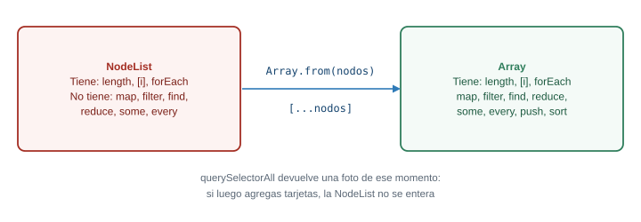
Si necesitas los métodos de arreglo, conviertes la NodeList con Array.from(...) o con [...nodos].
const items = document.querySelectorAll(".producto");
items.forEach((li) => console.log(li.textContent)); // funciona
const nombres = items.map((li) => li.textContent);
// Uncaught TypeError: items.map is not a function
const nombresOk = Array.from(items).map((li) => li.textContent);
console.log(nombresOk); // ["Tomate chonto", "Papa criolla", "Aguacate hass", "Panela"]getElementsByClassName y getElementsByTagName existen y devuelven una colección viva (se actualiza sola) que tampoco tiene map. Puedes encontrarlas en código antiguo. Esta guía usa querySelector y querySelectorAll.
| Método | Devuelve |
|---|---|
getElementById("x") |
Elemento o null |
querySelector(".x") |
Primer elemento o null |
querySelectorAll(".x") |
NodeList estática (vacía si no hay) |
Array.from(nodelist) para tener map y filter.
Si ves X is not a function y X es el resultado de querySelectorAll, sospecha de la NodeList. Si ves Cannot read properties of null, pregúntate si el elemento existía en ese momento. Ninguna de las dos cosas se memoriza como caso: se deduce de qué devuelve cada método cuando no encuentra y qué tipo de objeto es lo que devuelve.
Con la página de práctica abierta, escribe en la consola, sin tocar el HTML:
- Una expresión que devuelva cuántos productos no están agotados.
- Una expresión que devuelva el texto del último
li. - Una expresión que devuelva un arreglo con los nombres de todos los productos.
document.querySelectorAll(".producto:not(.agotado)").length;Devuelve 3. Usa el selector CSS :not() que conoces de la Semana 5.
const items = document.querySelectorAll(".producto");
items[items.length - 1].textContent;Devuelve "Panela". El último índice de una lista es length - 1. Otra opción es document.querySelector("#productos li:last-child").textContent.
Array.from(document.querySelectorAll(".producto"), (li) => li.textContent);Array.from acepta como segundo argumento una función que se aplica a cada elemento, así que sirve de conversión y de map a la vez. Si prefieres dos pasos: Array.from(items).map((li) => li.textContent).
Conexión con el proyecto
En el panel del productor vas a seleccionar siempre lo mismo: el formulario, los campos, el contenedor de las tarjetas. Esas búsquedas se hacen una sola vez, al inicio de app.js, y se guardan en constantes. Buscar el mismo elemento dentro de una función que se ejecuta muchas veces es más lento y deja el código lleno de selectores repetidos.
5 Parte 4. Modificar el DOM
El problema real
El productor agrega “Yuca” con precio y cantidad. Para que aparezca en el catálogo, tu código tiene que crear un elemento nuevo y ponerlo en el árbol. Si la cantidad es cero, la tarjeta debe verse como agotada (RN-03). Esas dos cosas, crear y cambiar el aspecto, son el contenido de esta parte.
Predice primero. El primer li de la lista tiene un listener de clic que escribe “clic” en la consola. Ejecutas lista.innerHTML += "<li class='producto'>Yuca</li>". Haces clic en el primer li. ¿Qué pasa?
No pasa nada: el listener se perdió. innerHTML += lee todo el HTML de la lista como texto, le agrega la cadena nueva y vuelve a construir todos los hijos desde cero. Los li viejos se descartan y los nuevos son objetos distintos, sin listeners. No aparece ningún error, y eso lo vuelve un bug difícil: la página se ve igual, pero un comportamiento dejó de existir.
Leer y escribir texto: textContent
const titulo = document.querySelector("#titulo");
console.log(titulo.textContent); // "Mi catálogo"
titulo.textContent = "Catálogo 2026"; // el cambio se ve en pantallatextContent trata lo que escribes como texto, nunca como HTML. Si le asignas "<b>hola</b>", verás las etiquetas literales en pantalla. Esa propiedad es la que usarás siempre que pongas en la página un dato que viene de una persona.
Cambiar el aspecto: classList antes que style
La forma sana de cambiar cómo se ve algo es agregarle o quitarle una clase que ya está definida en tu CSS, y no escribir estilos desde JavaScript.
const panela = document.querySelector(".producto:last-child");
panela.classList.add("agotado"); // agrega la clase
panela.classList.remove("agotado"); // la quita
panela.classList.toggle("agotado"); // la agrega si no está, la quita si está
console.log(panela.classList.contains("agotado")); // true o falsestyle existe y escribe un estilo directo sobre el elemento:
panela.style.backgroundColor = "tomato";
panela.style.color = "white";Dos cosas que debes saber de style. Las propiedades CSS con guion se escriben en camelCase (background-color se vuelve backgroundColor). Y si escribes con guion, el error es confuso, porque JavaScript lee el guion como una resta:
panela.style.background-color = "tomato";
// Uncaught SyntaxError: Invalid left-hand side in assignmentAun sabiendo escribirlo bien, style tiene un problema de fondo: reparte la apariencia entre tu CSS y tu JavaScript. Con classList, el CSS dice cómo se ve “agotado” en un único lugar, y el JavaScript solo decide cuándo aplica. Usa style solo para valores que se calculan en el momento (un ancho que depende de un dato, por ejemplo).
Atributos: getAttribute, setAttribute y dataset
Los atributos HTML (id, href, disabled, data-*) se leen y escriben con métodos, o con una propiedad directa si existe:
const boton = document.querySelector("#agregar");
boton.setAttribute("title", "Agrega un producto nuevo");
console.log(boton.getAttribute("title"));
boton.disabled = true; // propiedad directa: deshabilita el botón
boton.hidden = true; // oculta el botónLos atributos que empiezan por data- están hechos para que guardes datos propios en el HTML. En JavaScript aparecen en dataset, con el guion convertido a camelCase:
const item = document.querySelector(".producto");
item.dataset.id = 7; // escribe el atributo data-id="7"
console.log(item.dataset.id); // "7"
console.log(typeof item.dataset.id); // "string"Guarda ese último dato: todo lo que sale de dataset es texto, aunque hayas escrito un número. Esa conversión silenciosa causa un bug clásico que resolverás en la Parte 9.
Crear elementos: el ciclo de cuatro pasos
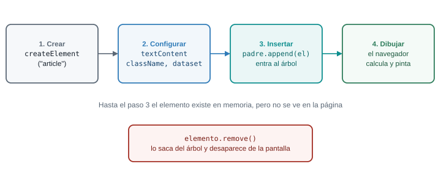
Un elemento recién creado existe solo en memoria. No se ve hasta que lo insertas en un padre que ya está en el DOM.
const lista = document.querySelector("#productos");
const nuevo = document.createElement("li"); // 1. crear
nuevo.textContent = "Yuca"; // 2. configurar
nuevo.className = "producto";
lista.append(nuevo); // 3. insertar al final del padreappend inserta al final; prepend al principio. Para quitar un elemento, se lo pides a él mismo: nuevo.remove(). Para vaciar un contenedor de un solo golpe, usa lista.replaceChildren().
append acepta varios argumentos a la vez, y cadenas de texto además de nodos:
lista.append(nuevo, "texto suelto");Un detalle que no genera ningún error: si le pasas null o undefined a append, no falla, sino que agrega el texto "null" o "undefined". Cuando veas la palabra “null” impresa en tu página, es casi seguro que una variable llegó vacía a un append.
innerHTML y el riesgo de inyección
innerHTML lee o escribe el contenido de un elemento como HTML. Es cómodo, porque permite armar una tarjeta completa con una plantilla de texto. También es la puerta de entrada de un ataque conocido.
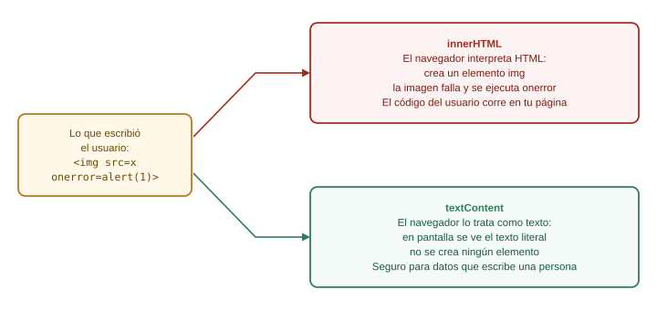
Con innerHTML, el navegador interpreta lo que recibe. Con textContent, solo lo muestra.
Imagina que el nombre del producto lo escribe una persona y tu código hace esto:
const nombre = "<img src=x onerror=alert(1)>"; // lo que escribió alguien
const tarjeta = document.createElement("div");
tarjeta.innerHTML = `<h2>${nombre}</h2>`; // peligrosoEl navegador crea una imagen con un src inválido. La imagen falla al cargar y dispara su evento onerror, que ejecuta el código escrito por quien llenó el formulario. Según MDN, los elementos <script> insertados con innerHTML no se ejecutan, pero los manejadores de eventos como onerror sí. A esto se le llama inyección de código (XSS), y MDN recomienda usar textContent cuando el contenido es texto plano.
La regla práctica, simple y suficiente para esta semana:
- Datos que vienen de una persona (nombre, descripción, comentario):
textContent, siempre. - HTML que escribiste tú, sin ningún dato externo:
innerHTMLes aceptable, pero crear los elementos concreateElementtambién lo es y no te obliga a pensarlo.
Tu taller de la Parte 10 construye cada tarjeta con createElement y textContent. Ese es el motivo.
Qué pasa si… el selector no encuentra el contenedor
Si lista es null porque el selector está mal escrito, el append falla con Cannot read properties of null (reading 'append'). Si en cambio le pasas algo que no es un nodo a appendChild (el método antiguo, que solo acepta un nodo), el mensaje es Failed to execute 'appendChild' on 'Node': parameter 1 is not of type 'Node'. Léelo como “me diste algo que no es un elemento”: casi siempre es null o un texto.
- Texto:
elemento.textContent. - Aspecto:
elemento.classList.add / remove / toggle / contains. - Crear:
createElement, configurar,padre.append(hijo); quitar:elemento.remove(). - Datos propios en el HTML:
data-algoyelemento.dataset.algo(siemprestring). - Datos que escribió una persona:
textContent, noinnerHTML.
Frente a una tarea de modificación, no preguntes “¿qué método era?”. Pregunta primero cuál de estas cuatro cosas quieres cambiar: el contenido (textContent), el aspecto (clases), un dato (atributo o dataset) o la estructura (crear, insertar, quitar). Con la categoría clara, el método sale de la lista corta de arriba.
Con la página de práctica, escribe en app.js un arreglo productos con objetos { nombre, cantidad } (tomate chonto 40, papa criolla 25, aguacate hass 0, panela 12). Vacía la lista y vuelve a dibujarla desde el arreglo: un li por producto, con el nombre como texto. Si la cantidad es 0, el li lleva además la clase agotado. Hazlo sin innerHTML.
const productos = [
{ nombre: "Tomate chonto", cantidad: 40 },
{ nombre: "Papa criolla", cantidad: 25 },
{ nombre: "Aguacate hass", cantidad: 0 },
{ nombre: "Panela", cantidad: 12 },
];
const lista = document.querySelector("#productos");
lista.replaceChildren();
for (const producto of productos) {
const item = document.createElement("li");
item.className = "producto";
item.textContent = producto.nombre;
if (producto.cantidad === 0) {
item.classList.add("agotado");
}
lista.append(item);
}Cada vuelta del for...of hace los cuatro pasos del ciclo: crear, configurar, decidir la clase, insertar. La condición cantidad === 0 es la regla RN-03 aplicada: el estado “agotado” se deduce de la cantidad, no se guarda aparte. Esa idea vuelve en la Parte 7.
Conexión con el proyecto
La tarjeta de producto de tu panel es exactamente esto, con más elementos: un contenedor, un título, un párrafo con el precio y la cantidad, y botones. En el taller la construyes con una función crearTarjeta que recibe un producto y devuelve el elemento, para no repetir el ciclo a mano cada vez.
6 Parte 5. Eventos
El problema real
Hay dos botones en el panel: “Agregar” y, dentro de cada tarjeta, “Quitar”. Los botones de las tarjetas no existen todavía cuando la página carga: se crean cuando el productor agrega algo. ¿Cómo le dices a un botón que no existe “cuando te pulsen, haz esto”? La respuesta pasa por entender cómo viaja un evento por el DOM.
Predice primero. Una lista contiene un li y dentro del li hay un botón. Registras un listener de clic en el botón, otro en el li y otro en la lista, cada uno con su console.log. Haces clic en el botón. ¿En qué orden salen los tres mensajes?
El orden es botón, li, lista: del elemento más interno hacia afuera. Un clic en el botón es, para el navegador, un clic dentro del li y dentro de la lista también, porque el botón está contenido en ellos. El evento “sube” por los ancestros. A ese viaje de subida se le llama burbujeo.
Modelo mental: registrar, no llamar
Un evento es algo que le ocurre a un elemento: un clic, una tecla, un formulario enviado. Tú no preguntas “¿ya hicieron clic?” una y otra vez. Le registras al elemento una función, y el navegador la llama cuando el evento ocurre. Esa función se llama manejador (handler).
const agregar = document.querySelector("#agregar");
function saludar() {
console.log("Hola desde el panel");
}
agregar.addEventListener("click", saludar);addEventListener(tipo, manejador) recibe dos cosas principales: el tipo de evento como texto ("click") y la función. Observa que escribes saludar sin paréntesis. La razón es el centro de esta parte, y la verás en el siguiente error.
Qué pasa si… llamas a la función en vez de pasarla
agregar.addEventListener("click", saludar()); // incorrecto: con paréntesissaludar() con paréntesis ejecuta la función ahora y pasa lo que devuelve (undefined) como manejador. El resultado es un bug sin ningún mensaje de error: la función corre una vez, al cargar la página, y después no hace nada cuando pulsas el botón. Si ves en la consola un mensaje que aparece al cargar, pero nunca al hacer clic, revisa los paréntesis. Pasar la función es darle la receta; llamarla es cocinar en ese momento.
Los eventos que más usarás
| Evento | Cuándo ocurre | Dato útil |
|---|---|---|
click |
Se pulsa el elemento | event.target |
input |
El valor de un campo cambia con cada tecla | event.target.value |
change |
El valor se confirma (al salir del campo, al elegir en un select) |
event.target.value |
submit |
Se envía un formulario (clic en el botón de envío o Enter) | se escucha en el form |
keydown |
Se pulsa una tecla | event.key |
DOMContentLoaded |
El documento terminó de leerse | se escucha en document |
Con defer en tu script, no necesitas DOMContentLoaded: el DOM ya está listo cuando corres. Si algún día no usas defer, envuelves tu código así:
document.addEventListener("DOMContentLoaded", () => {
// aquí el DOM ya existe
});El objeto event
El navegador le pasa a tu manejador un objeto con información de lo ocurrido. Las propiedades que debes conocer:
event.type: el tipo (“click”, “input”).event.target: el elemento donde se originó el evento (el más profundo que recibió el clic).event.currentTarget: el elemento al que está pegado el listener que se está ejecutando.event.key: en eventos de teclado, la tecla.event.preventDefault(): cancela la acción por defecto (enviar el formulario, seguir un enlace).event.stopPropagation(): detiene el viaje del evento hacia otros elementos.
const filtro = document.querySelector("#filtro");
filtro.addEventListener("input", (event) => {
console.log("Escribió:", event.target.value);
});Las tres fases: captura, objetivo y burbujeo
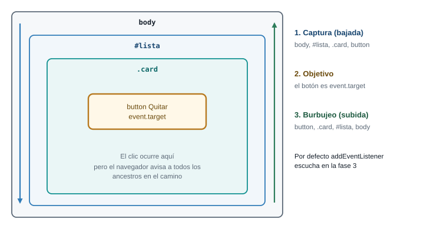
Un clic en el botón baja por los ancestros (captura), llega al botón (objetivo) y sube de nuevo (burbujeo). Por defecto, addEventListener escucha durante la subida.
Según MDN, un evento pasa por tres fases: la captura, que va desde el elemento más externo hacia el objetivo; la fase de objetivo, en el propio elemento; y el burbujeo, que sube desde el objetivo hacia afuera. Por defecto, los listeners se registran en la fase de burbujeo. Si necesitas escuchar en la captura, lo pides con una opción:
lista.addEventListener("click", manejador, { capture: true });En la práctica usarás el burbujeo casi siempre. La captura la verás muy poco.
event.target y event.currentTarget casi siempre se confunden. Ejemplo con la lista, el li y el botón: si haces clic en el botón y el listener está en la lista, event.target es el botón (donde ocurrió) y event.currentTarget es la lista (donde está el listener).
preventDefault y stopPropagation
preventDefault() cancela lo que el navegador haría por defecto. En un formulario, el comportamiento por defecto de submit es recargar la página enviando los datos. Sin cancelarlo, tu código corre y la página se recarga inmediatamente después, borrando todo lo que dibujaste:
form.addEventListener("submit", (event) => {
event.preventDefault(); // sin esto, la página se recarga
// ... tu lógica
});stopPropagation() es otra cosa: no cancela la acción, sino que corta el burbujeo. Úsalo con moderación. Si un stopPropagation impide que el evento llegue a un contenedor, cualquier listener que estuviera ahí (el de tu delegación, por ejemplo) deja de funcionar sin que se entienda por qué.
Delegación: un solo listener para muchos botones
Volvamos al problema inicial. Hay dos formas de atender los botones “Quitar” de las tarjetas:
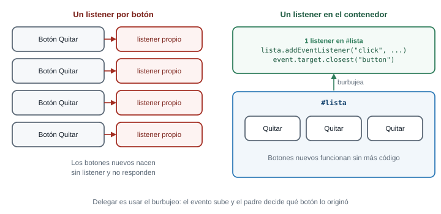
A la izquierda, un listener por botón: los botones que se crean después nacen sin listener. A la derecha, un único listener en el contenedor aprovecha el burbujeo.
La forma ingenua recorre los botones existentes y pega un listener a cada uno. Funciona para los que ya están en la página, pero los botones creados después no lo tienen. La delegación aprovecha el burbujeo: un clic en cualquier botón de la lista sube hasta la lista, y es la lista la que decide qué hacer.
const lista = document.querySelector("#productos");
lista.addEventListener("click", (event) => {
const boton = event.target.closest("button"); // ¿el clic fue en (o dentro de) un botón?
if (!boton) {
return; // el clic fue en otra parte de la lista
}
boton.closest("li").remove(); // quita el li que contiene ese botón
});closest(selector) sube por los ancestros desde el elemento hasta encontrar el primero que coincide con el selector (incluyéndose a sí mismo), o devuelve null si no hay ninguno. Se usa porque event.target puede ser un elemento dentro del botón (un icono, un span) y no el botón mismo. Con closest, resuelves el caso sin pensarlo.
- Registrar:
elemento.addEventListener("click", manejador), sin paréntesis tras el nombre. submiten un formulario: empieza siempre conevent.preventDefault().event.targetes dónde ocurrió;event.currentTargetes dónde está el listener.- Delegación: un listener en el contenedor y
event.target.closest(...)dentro.
¿Por qué la delegación atiende botones que aún no existen? Porque el listener no está en los botones, está en el contenedor, que sí existe. El clic sube hasta él pase lo que pase con los hijos. Si entiendes el burbujeo, no hay nada que memorizar sobre delegación: es una consecuencia.
¿Y por qué submit recarga la página? Porque un formulario HTML existe desde mucho antes que JavaScript: su comportamiento original era enviar datos a otra página. preventDefault es la forma de decir “yo me encargo”.
Hilo de diagnóstico: el botón Quitar de un producto nuevo no responde
Este es el bug que más se repite con eventos. Un estudiante escribe esto:
const botones = document.querySelectorAll(".quitar");
botones.forEach((boton) => {
boton.addEventListener("click", () => {
boton.closest("li").remove();
});
});Los botones que estaban en el HTML funcionan. Los de productos agregados después, no. Aplica el método:
- Reproducir. Agregar un producto y pulsar su botón. Falla siempre, y solo con los nuevos.
- Aislar. En la consola,
document.querySelectorAll(".quitar").lengthantes y después de agregar. El número crece, así que el botón nuevo existe. El problema no es que falte el botón. - Hipótesis. El
querySelectorAllse ejecutó una vez, al cargar. Devolvió unaNodeListestática (Parte 3) con los botones de ese momento. Los nuevos nunca entraron en ella, y nunca recibieron listener. - Comprobar. Pega el listener en el contenedor (delegación) y prueba de nuevo: funciona con todos, nuevos y viejos.
La corrección no está en la línea que “falla”: está en el modelo. El método dio el diagnóstico sin adivinar.
En la página de práctica, haz que un clic sobre cualquier li alterne la clase seleccionado (la agrega si no está, la quita si está). Debe funcionar también con un li que agregues después con JavaScript. Usa un solo listener.
const lista = document.querySelector("#productos");
lista.addEventListener("click", (event) => {
const item = event.target.closest("li");
if (!item) {
return;
}
item.classList.toggle("seleccionado");
});El listener está en el ul, que existe desde la carga. closest("li") encuentra el li que contiene el punto donde se hizo clic. Si el clic cae en el ul pero fuera de cualquier li, closest devuelve null y el if evita un error. Para probar un li nuevo, en la consola: lista.append(Object.assign(document.createElement("li"), { textContent: "Yuca" })) y haz clic sobre él: también se alterna, aunque se creó después de registrar el listener.
Conexión con el proyecto
En el taller, un solo listener en el contenedor de las tarjetas atiende los tres botones de cada producto (editar, marcar agotado, quitar), y un solo listener de submit en el formulario atiende el alta y la edición. Dos listeners, no veinte.
7 Parte 6. El ES6 que necesitas
El problema real
Un panel de catálogo no es solo DOM: es datos. Una lista de productos, cada uno con nombre, precio y cantidad, y preguntas sobre ella: ¿cuántos hay agotados?, ¿cuánto vale el inventario?, ¿cuál es la panela? Para responderlas necesitas las herramientas del lenguaje. ES6 (también llamado ES2015) es la versión de JavaScript que las introdujo, y hoy es el JavaScript normal de cualquier navegador. No la vas a memorizar entera: aprendes las piezas que usa el taller.
Predice primero. const producto = { nombre: "Panela", cantidad: 12 }; y después producto.cantidad = 0;. ¿Da error? ¿Y producto = { nombre: "Yuca" };?
La primera no da error. La segunda sí: Uncaught TypeError: Assignment to constant variable. const impide reasignar el nombre a otra cosa, no impide modificar el contenido del objeto al que apunta. Piensa en const como una etiqueta pegada a un cajón: no puedes cambiar la etiqueta de cajón, pero sí meter y sacar cosas dentro.
let, const y el alcance
Hay tres palabras para declarar una variable. Una de ellas, var, es la forma antigua, y la verás en código viejo. Esta guía no la usa.
| Palabra | Se puede reasignar | Alcance |
|---|---|---|
const |
No | El bloque { } donde se declara |
let |
Sí | El bloque { } donde se declara |
var |
Sí | La función completa (comportamiento heredado; evítalo) |
La regla de uso: const por defecto; let solo cuando vas a reasignar la variable (un contador, un acumulador). Si lees let en un código, ya sabes que ese valor cambia en algún punto.
El alcance (scope) es la región del código donde existe una variable. Un bloque es todo lo que queda entre llaves: una función, un if, un for. Una variable declarada con let o const solo existe dentro de su bloque y los bloques que contiene.
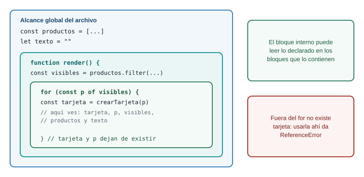
Un bloque interno puede leer lo declarado en los bloques que lo contienen. A la inversa, no.
const productos = [{ nombre: "Panela", cantidad: 12 }];
for (const producto of productos) {
const mensaje = `Hay ${producto.cantidad} de ${producto.nombre}`;
console.log(mensaje); // aquí existe: está dentro del for
}
console.log(mensaje);
// Uncaught ReferenceError: mensaje is not definedEl error X is not defined aparece cuando usas una variable fuera del bloque donde existe, o cuando escribiste mal el nombre. Hay un caso más sutil, que lleva su propio mensaje:
console.log(total); // Uncaught ReferenceError: Cannot access 'total' before initialization
let total = 5;Lees total antes de la línea donde se declara. El mensaje no dice “no existe” sino “no la puedes tocar todavía”. Con ese texto, sabes que la variable está declarada más abajo en el mismo bloque.
Funciones flecha
Una función se puede escribir de dos maneras. La flecha es más corta y es la que usarás en map, filter y en los manejadores de eventos:
function doble(n) {
return n * 2;
}
const dobleFlecha = (n) => n * 2;Con una sola expresión y sin llaves, el resultado se devuelve solo (return implícito). Si pones llaves, vuelves a necesitar return. Con un solo parámetro, los paréntesis son opcionales, pero escribirlos siempre hace el código más uniforme.
Un tropiezo clásico aparece cuando una flecha debe devolver un objeto:
const productos = [{ nombre: "Panela", precio: 5500 }];
const mal = productos.map((p) => { nombre: p.nombre });
console.log(mal); // [undefined]
const bien = productos.map((p) => ({ nombre: p.nombre }));
console.log(bien); // [{ nombre: "Panela" }]En la primera, las llaves se leen como el cuerpo de la función, no como un objeto, y como no hay return, cada elemento queda en undefined. En la segunda, los paréntesis le dicen a JavaScript “esto es una expresión, un objeto”. No hay error en consola, solo un resultado vacío.
Plantillas literales
Las comillas invertidas (`) permiten insertar valores dentro de un texto con ${ }, y escribir texto de varias líneas:
const producto = { nombre: "Panela", precio: 5500, cantidad: 12 };
const linea = `${producto.nombre}: ${producto.cantidad} unidades a ${producto.precio} COP`;
console.log(linea); // "Panela: 12 unidades a 5500 COP"Dentro de ${ } cabe cualquier expresión, no solo un nombre de variable: ${precio * cantidad}, ${cantidad === 0 ? "agotado" : "disponible"}.
Para mostrar dinero en pesos colombianos, no armes el formato a mano. El navegador trae Intl.NumberFormat, que sabe poner los separadores de miles:
const formatoCOP = new Intl.NumberFormat("es-CO", {
style: "currency",
currency: "COP",
maximumFractionDigits: 0,
});
console.log(formatoCOP.format(3500)); // "$ 3.500"El espacio entre $ y el número es un espacio de no separación, por eso conviene que no compares ese texto a mano con otro texto: úsalo solo para mostrar.
Objetos y arreglos
Un objeto agrupa datos con nombre. Un arreglo agrupa valores en orden. Casi todo el taller usa un arreglo de objetos:
const productos = [
{ id: 1, nombre: "Tomate chonto", precio: 3500, cantidad: 40 },
{ id: 2, nombre: "Papa criolla", precio: 4200, cantidad: 25 },
{ id: 3, nombre: "Aguacate hass", precio: 6800, cantidad: 0 },
{ id: 4, nombre: "Panela", precio: 5500, cantidad: 12 },
];
console.log(productos[3].nombre); // "Panela" (se cuenta desde 0)
console.log(productos.length); // 4
productos.push({ id: 5, nombre: "Yuca", precio: 2000, cantidad: 10 }); // agrega al finalUna trampa que sorprende: copiar una variable que apunta a un arreglo no copia el arreglo.
const copia = productos; // NO es una copia: es otro nombre para el mismo arreglo
copia.pop();
console.log(productos.length); // 4: el original también perdió el elementoLos objetos y los arreglos son referencias: dos variables pueden apuntar al mismo contenido. Para hacer una copia de verdad, usas spread, que viene en un momento.
Desestructuración
La desestructuración saca valores de un objeto o de un arreglo en variables, en una sola línea:
const producto = { nombre: "Panela", precio: 5500, cantidad: 12 };
const { nombre, cantidad } = producto; // dos variables nuevas: nombre y cantidad
console.log(nombre, cantidad); // "Panela" 12
const [primero, segundo] = productos; // por posición, en arreglos
console.log(primero.nombre); // "Tomate chonto"En objetos se extrae por nombre, así que el orden no importa. En arreglos se extrae por posición. También funciona en los parámetros de una función, y es una forma cómoda de dejar claro qué campos usa:
const describir = ({ nombre, precio }) => `${nombre} cuesta ${precio}`;
console.log(describir(producto)); // "Panela cuesta 5500"spread: copiar y combinar
Tres puntos (...) esparcen el contenido de un arreglo o de un objeto:
const todos = [...productos, { id: 6, nombre: "Café", precio: 18000, cantidad: 5 }];
// un arreglo NUEVO con los elementos de productos y uno más
const agotado = { ...producto, cantidad: 0 };
// un objeto NUEVO con los campos de producto, pero con cantidad en 0
console.log(producto.cantidad, agotado.cantidad); // 12 0Cuando hay campos repetidos, gana el último. Esa es la forma de “modificar sin tocar el original”. Es una copia superficial: si el objeto contiene otro objeto, ese interior se sigue compartiendo.
map, filter, find, reduce, some y every
Estos seis métodos de arreglo hacen casi todo el trabajo con datos. Cada uno recibe una función que se aplica a cada elemento. La clave para no confundirlos es qué devuelve cada uno:
| Método | Pregunta que responde | Devuelve |
|---|---|---|
map(f) |
¿Cómo se ve cada elemento transformado? | Un arreglo nuevo del mismo largo |
filter(f) |
¿Cuáles cumplen la condición? | Un arreglo nuevo, tal vez más corto o vacío |
find(f) |
¿Cuál es el primero que cumple? | Un elemento, o undefined |
reduce(f, inicial) |
¿A qué valor único se resume todo? | Un solo valor |
some(f) |
¿Alguno cumple? | true o false |
every(f) |
¿Todos cumplen? | true o false |
const nombres = productos.map((p) => p.nombre);
// ["Tomate chonto", "Papa criolla", "Aguacate hass", "Panela"]
const agotados = productos.filter((p) => p.cantidad === 0);
// [{ id: 3, nombre: "Aguacate hass", ... }]
const panela = productos.find((p) => p.nombre === "Panela");
// { id: 4, nombre: "Panela", ... }
const hayAgotados = productos.some((p) => p.cantidad === 0); // true
const todosConPrecio = productos.every((p) => p.precio > 0); // truereduce es el más difícil de leer. Recibe una función con dos parámetros, el acumulador (lo que llevas hasta ahora) y el elemento actual, y un valor inicial:
const valor = productos.reduce((suma, p) => suma + p.precio * p.cantidad, 0);Con los cuatro productos originales (sin Yuca), la ejecución paso a paso es:
| Vuelta | suma al entrar |
Elemento | suma al salir |
|---|---|---|---|
| 1 | 0 (el valor inicial) | Tomate: 3500 x 40 | 140000 |
| 2 | 140000 | Papa: 4200 x 25 | 245000 |
| 3 | 245000 | Aguacate: 6800 x 0 | 245000 |
| 4 | 245000 | Panela: 5500 x 12 | 311000 |
El valor que devuelve la función en cada vuelta se vuelve el suma de la siguiente. Al final, reduce devuelve el último acumulador: 311000.
Qué pasa si… find no encuentra nada. Devuelve undefined, y usar ese resultado sin comprobar produce el error más común del taller:
const yuca = productos.find((p) => p.nombre === "Yucca"); // typo: no existe
console.log(yuca.cantidad);
// Uncaught TypeError: Cannot read properties of undefined (reading 'cantidad')El mensaje describe el síntoma, no la causa. La causa está una línea antes: algo devolvió undefined. Siempre que veas Cannot read properties of undefined, sube en el código hasta la línea donde se asignó esa variable y pregúntate qué pudo devolver undefined (un find sin resultado, un índice fuera de rango, una propiedad mal escrita).
map, filter, find, some, every y reduce no modifican el arreglo original: devuelven algo nuevo. En cambio, push, pop, sort y splice sí lo modifican. sort en particular sorprende: si necesitas ordenar sin alterar el original, ordena una copia, [...productos].sort(...).
Módulos, en breve
Cuando un proyecto crece, un solo app.js se vuelve incómodo. Los módulos permiten partir el código en varios archivos, cada uno exporta lo que quiere compartir y otro lo importa:
// utilidades.js
export const formatoCOP = new Intl.NumberFormat("es-CO", { style: "currency", currency: "COP" });
// app.js
import { formatoCOP } from "./utilidades.js";Se cargan con <script type="module" src="app.js">. Dos consecuencias que debes conocer: un módulo se ejecuta como si tuviera defer (lo comprobamos en Chrome al preparar esta guía), y los módulos no funcionan abriendo el archivo con doble clic: el navegador bloquea las importaciones desde file:// con un error de CORS.
Access to script at 'file:///.../app.js' from origin 'null' has been blocked by CORS policyCon Live Server funciona, porque la página se sirve por http://. Esta semana trabajas con un solo archivo y sin módulos, así que tampoco tendrías ese error, pero ya sabes qué significa si aparece.
constpor defecto,letsi reasignas; no usesvar.- Flecha:
(a, b) => a + b; si devuelves un objeto, ponlo entre paréntesis:(p) => ({ ... }). - Plantilla:
`Hola ${nombre}`. - Qué devuelve cada método:
maparreglo del mismo largo,filterarreglo,findelemento oundefined,reduceun valor,someyeveryun booleano. - Compara siempre con
===, no con==.
- ¿Por qué
const copia = productosno copia? Porque el arreglo es una referencia. No hay nada que memorizar: dos nombres, un mismo cajón. Para dos cajones,[...productos]. - ¿Qué método uso? Mira la forma del resultado que necesitas. Un arreglo del mismo tamaño con cada elemento transformado es
map. Un subconjunto esfilter. Uno solo esfind. Un número o un texto que resume todo esreduce. Sí o no essomeoevery. - ¿Por qué falla
X is not definedaquí? Pregúntate en qué bloque se declaróXy si estás dentro de él.
Escribe una función resumir(productos) que reciba el arreglo de productos y devuelva un objeto con tres datos: disponibles (cuántos productos tienen cantidad mayor que 0), agotados (cuántos tienen cantidad 0) y valor (la suma de precio por cantidad de todos). Pruébala con los cuatro productos originales: debe dar { disponibles: 3, agotados: 1, valor: 311000 }. Usa solo filter, reduce y desestructuración o plantillas si quieres.
function resumir(productos) {
const disponibles = productos.filter((p) => p.cantidad > 0).length;
const agotados = productos.filter((p) => p.cantidad === 0).length;
const valor = productos.reduce((suma, p) => suma + p.precio * p.cantidad, 0);
return { disponibles, agotados, valor };
}
const productos = [
{ id: 1, nombre: "Tomate chonto", precio: 3500, cantidad: 40 },
{ id: 2, nombre: "Papa criolla", precio: 4200, cantidad: 25 },
{ id: 3, nombre: "Aguacate hass", precio: 6800, cantidad: 0 },
{ id: 4, nombre: "Panela", precio: 5500, cantidad: 12 },
];
console.log(resumir(productos)); // { disponibles: 3, agotados: 1, valor: 311000 }{ disponibles, agotados, valor } es la forma corta de { disponibles: disponibles, agotados: agotados, valor: valor }: cuando la variable y la clave se llaman igual, se escribe una vez. La función no toca el DOM, y esa separación es deliberada: se puede probar sin abrir una página, y la vas a reutilizar en la Parte 7.
Conexión con el proyecto
Tu panel tiene un arreglo de productos, y todo lo que muestra (las tarjetas, el aviso de agotado, el total) sale de calcular sobre ese arreglo con estos métodos. Quien domina filter, find y reduce ya resolvió la mitad del taller.
8 Parte 7. Estado y render: el DOM como consecuencia de los datos
El problema real
El productor quita la panela. ¿Qué tiene que cambiar en la pantalla? La tarjeta desaparece, el contador baja de 4 a 3, el valor total del inventario se recalcula y, si era el último producto, aparece un aviso de catálogo vacío. Son cuatro lugares distintos para un solo hecho: se quitó un producto.
Predice primero. Para cada producto guardas cantidad y además agotado: true o false. El productor edita la cantidad de aguacate de 0 a 5, y tu código solo actualiza cantidad. ¿Qué muestra el panel?
Muestra un aguacate con 5 disponibles y la etiqueta “Agotado”: una contradicción. Guardaste el mismo hecho en dos lugares, y solo cambiaste uno. Esa es la razón de fondo de esta parte: si algo se puede deducir de otro dato (agotado se deduce de cantidad === 0), no lo guardes aparte. Un solo lugar para cada verdad.
Dos maneras de mantener la pantalla al día
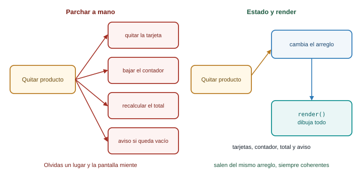
Parchar es acordarse de cada lugar. Con estado y render, un solo arreglo manda y una función redibuja.
Parchar el DOM a mano. Cuando ocurre un evento, tu código busca cada elemento afectado y lo modifica: quita la tarjeta, baja el contador, recalcula el total, muestra el aviso. Funciona hasta que olvidas un lugar. Con cada función nueva (filtrar, editar) aumentan los lugares que hay que recordar, y los bugs aparecen en las combinaciones: “al filtrar y luego quitar, el total queda mal”.
Estado y render. Separas dos cosas. El estado son los datos: el arreglo productos. El render es una función que lee el estado y dibuja la pantalla completa. Los eventos solo cambian el estado y llaman a render().
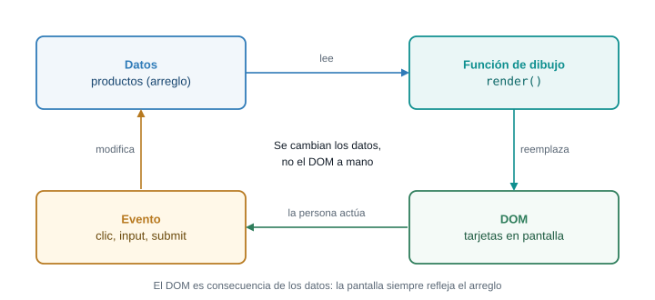
El ciclo: el evento cambia los datos, render() redibuja, y la persona ve el resultado y genera otro evento. El DOM nunca se edita a mano: es consecuencia de los datos.
El mecanismo, con el código mínimo
Con la página de práctica de la Parte 3 (la lista #productos y el párrafo .aviso), este es el patrón completo, en pocas líneas:
let productos = [
{ id: 1, nombre: "Tomate chonto", precio: 3500, cantidad: 40 },
{ id: 2, nombre: "Papa criolla", precio: 4200, cantidad: 25 },
{ id: 3, nombre: "Aguacate hass", precio: 6800, cantidad: 0 },
{ id: 4, nombre: "Panela", precio: 5500, cantidad: 12 },
];
const lista = document.querySelector("#productos");
const aviso = document.querySelector(".aviso");
function render() {
lista.replaceChildren();
for (const p of productos) {
const item = document.createElement("li");
item.className = p.cantidad === 0 ? "producto agotado" : "producto";
item.dataset.id = p.id;
item.textContent = `${p.nombre} (${p.cantidad}) `;
const quitar = document.createElement("button");
quitar.textContent = "Quitar";
item.append(quitar);
lista.append(item);
}
aviso.textContent = `Hoy hay ${productos.length} productos.`;
}
lista.addEventListener("click", (event) => {
const boton = event.target.closest("button");
if (!boton) {
return;
}
const id = Number(boton.closest("li").dataset.id);
productos = productos.filter((p) => p.id !== id); // 1. cambia el estado
render(); // 2. redibuja
});
render();Lee el flujo con calma. El evento no toca el li: solo reemplaza el arreglo por uno sin ese producto y llama a render(). render vacía la lista y la reconstruye entera a partir de productos, y actualiza también el aviso. Si mañana agregas “filtrar” o “editar”, cada nueva función hace lo mismo: cambiar el estado y llamar a render(). No hay lugares que recordar.
El costo es que se reconstruye todo cada vez. Con decenas o cientos de productos, el navegador lo hace en una fracción de segundo, y no lo notas. Con decenas de miles necesitarías otras técnicas, pero eso es otro problema de otra semana. Frameworks como React se construyen sobre esta misma idea (la pantalla como función de los datos), así que el patrón que aprendes hoy no se pierde.
Dos consecuencias prácticas de redibujar:
- Lo que está dentro de lo redibujado se pierde: foco, texto a medio escribir, scroll interno. Por eso el formulario del taller no está dentro del contenedor que se redibuja.
- Los listeners sobre elementos viejos desaparecen, porque esos elementos ya no existen. Por eso se usa delegación sobre el contenedor, que no se reemplaza.
Qué pasa si… cambias el estado y olvidas render()
productos = productos.filter((p) => p.id !== id);
// falta render()No hay error. La pantalla sigue igual, pero los datos ya cambiaron. Si escribes productos en la consola, verás un producto menos. Esa desincronización (datos y pantalla distintos) es el síntoma característico de este bug: compara la consola (los datos) con el panel Elements (la pantalla). Si no coinciden, falta un render().
Y al revés: si render() se llama pero el estado no cambió (porque modificaste una copia en vez del arreglo real), la pantalla se redibuja idéntica. En los dos casos la regla es la misma: pregunta primero si el estado es el correcto, y solo después si el dibujo lo es.
- Un solo arreglo de datos es la fuente de verdad.
- Los eventos cambian el estado y llaman a
render(). render()lee el estado y dibuja todo; no guarda nada.- Lo que se puede calcular (agotado, total, contador) no se guarda: se calcula en
render.
¿Siempre hay que redibujar todo? No es un dogma. Si solo cambias el texto de un contador, hacer contador.textContent = n es correcto y más simple. Lo que importa es el criterio: cuando un hecho afecta varios lugares, o cuando sabes que va a crecer, el estado y el render te evitan olvidar uno. Si el cambio es local y seguirá siéndolo, parchar es legítimo.
En el taller, el filtro de búsqueda cambia lo que se ve pero no quita productos. ¿Dónde guardarías el texto del filtro: en el DOM (el valor del input) o en una variable? ¿Y qué pasaría si guardas la lista ya filtrada como si fuera productos? Pista: al borrar el texto del filtro, ¿de dónde sacarías los productos que ya no están?
Conexión con el proyecto
El panel de catálogo es un caso de manual para este patrón: un arreglo productos, una función render, y todo lo demás (agregar, editar, quitar, marcar agotado, filtrar) son manejadores que cambian el estado y vuelven a llamar a render. Cuando llegues al taller, vas a reconocer la forma.
10 Parte 9. Depuración desde consola
El problema real
Tarde o temprano, el panel hace algo que no esperabas. El botón “Quitar” no quita, el total sale NaN, la tarjeta duplica el texto. Un programador con experiencia no es quien no se equivoca: es quien encuentra el error rápido. Esa velocidad viene de un método y de saber qué herramienta abrir.
Predice primero. Tienes productos con ids numéricos (1, 2, 3, 4) y el botón Quitar guarda el id en data-id. Tu código hace productos.filter((p) => p.id !== id) con const id = boton.closest("li").dataset.id. ¿Se quita el producto?
No, y no se muestra ningún error. dataset.id es un string ("4"), y el id del producto es un número (4). Con !==, 4 !== "4" es true para todos los productos, así que el filter los conserva todos. Es un bug silencioso. En esta parte lo cazas con el método, no adivinando.
Las herramientas
Las cuatro pestañas de DevTools que usarás ya las viste en el diagrama de “Antes de empezar”. Aquí, cuándo abrir cada una:
| Pregunta | Panel |
|---|---|
| ¿Qué hay realmente en el DOM ahora mismo? | Elements |
¿Qué dicen mis console.log? ¿Hay errores? |
Console |
| ¿Qué valen mis variables en esta línea? | Sources, con breakpoints |
¿Se descargó app.js? ¿Dio 404? |
Network |
console: más allá de log
console.log("valor:", productos.length); // imprime lo que le pases
console.table(productos); // un arreglo de objetos como tabla
console.warn("Cantidad rara:", 0); // aviso, en amarillo
console.error("No se encontró el id", 9); // error, en rojo
console.group("render"); // agrupa mensajes con sangría
console.log("tarjetas:", 4);
console.groupEnd();console.table es la herramienta más infrautilizada de la lista: un arreglo de objetos se ve como una tabla con una fila por producto, mucho más fácil de leer que una lista de {...} plegados. Para ver el tipo de un valor, console.log(typeof valor); es la forma más rápida de descubrir un "string" donde esperabas un número.
Una advertencia: console.log(objeto) imprime una referencia al objeto. Si lo modificas después, al expandirlo en la consola puedes ver los valores nuevos y no los de cuando lo imprimiste. Si necesitas una fotografía, imprime una copia: console.log({ ...objeto }).
Leer un error
Cuando algo falla, la consola muestra el mensaje y, debajo, una pila de llamadas (stack trace):
Uncaught TypeError: Cannot read properties of undefined (reading 'toFixed')
at crearTarjeta (http://127.0.0.1:5500/app.js:52:30)
at render (http://127.0.0.1:5500/app.js:98:23)
at alEnviar (http://127.0.0.1:5500/app.js:170:3)Se lee de arriba hacia abajo, de lo más reciente a lo más antiguo. La primera línea es donde explotó (crearTarjeta, línea 52, columna 30), la siguiente es quién la llamó (render), y así sucesivamente. Cada una es un enlace: pulsa y DevTools abre app.js en esa línea. Para un error de tu código, empieza siempre por la primera línea que apunte a un archivo tuyo.
El mensaje se descompone en dos partes. TypeError, ReferenceError y SyntaxError son la clase del error: un tipo equivocado, un nombre que no existe, o código mal escrito. Lo que sigue explica el detalle. Con las dos partes, casi siempre sabes qué buscar.
Breakpoints: pausar el programa
console.log obliga a editar el código, guardar, recargar y volver a mirar. Un breakpoint pausa el programa en una línea y te deja inspeccionar todo en ese instante.
- Abre Sources, busca
app.jsen el árbol de archivos de la izquierda. - Pulsa el número de línea donde quieres detener el programa. Aparece un marcador azul.
- Provoca la acción (haz clic en el botón). El programa se pausa en esa línea, sin ejecutarla.
- Mira el panel Scope a la derecha: ahí están los valores actuales de todas las variables.
- Avanza con los controles, o con el teclado:
| Acción | Atajo | Qué hace |
|---|---|---|
| Resume (reanudar) | F8 |
Sigue hasta el próximo breakpoint |
| Step over | F10 |
Ejecuta la línea actual y pasa a la siguiente |
| Step into | F11 |
Entra a la función que se llama en esa línea |
| Step out | Mayús + F11 |
Sale de la función actual |
| Poner o quitar breakpoint | Ctrl + B |
En la línea donde está el cursor |
También puedes escribir debugger; en tu código: con DevTools abierto, el navegador se pausa en esa línea como si fuera un breakpoint, y con DevTools cerrado no hace nada. Úsalo para depurar y bórralo antes del commit.
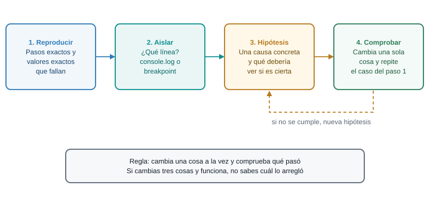
El método: cuatro pasos y un solo cambio por intento.
Hilo de diagnóstico: el producto no se quita
Aplica el método al bug de la predicción. Este es el código que escribió el estudiante:
lista.addEventListener("click", (event) => {
const boton = event.target.closest("button");
if (!boton) {
return;
}
const id = boton.closest("li").dataset.id;
productos = productos.filter((p) => p.id !== id);
render();
});1. Reproducir. Pulsa “Quitar” en la panela. No ocurre nada. Pruébalo con otros productos: tampoco. Es un fallo siempre, no a veces. Anota el caso exacto: “clic en Quitar de la panela: no desaparece, y no hay errores en la consola”.
2. Aislar. Que no haya error descarta una excepción. Entonces la pregunta es dónde se rompe la cadena: ¿el listener se ejecuta? Agrega un console.log("clic", id) justo después de calcular id. La consola muestra clic 4. El listener corre, y id existe. Después del filter, imprime console.log(productos.length): sigue siendo 4. El problema está en el filter.
3. Hipótesis. El filter conserva todos los productos, así que la condición p.id !== id es siempre true. ¿Por qué? Una causa posible: los dos lados no son del mismo tipo. Una hipótesis concreta que se puede comprobar: p.id es un número y id es un texto.
4. Comprobar. En la consola, con el programa pausado o con console.log:
console.log(typeof productos[3].id, typeof id); // "number" "string"
console.log(productos[3].id === id); // false, aunque ambos dicen 4
console.table(productos);La hipótesis se confirma. Cambia una sola cosa, la conversión:
const id = Number(boton.closest("li").dataset.id);Repite el caso exacto del paso 1: ahora la panela desaparece. Si no hubiera desaparecido, tendrías que volver al paso 3 con una nueva hipótesis, no seguir tocando código al azar.
Observa lo que no hiciste: no reescribiste el listener, no probaste cambiar !== por != a ver si funcionaba (aunque en este caso sí habría funcionado, por una conversión implícita que te habría escondido el problema real), no pediste que alguien más lo viera. El método convirtió un “no funciona” en una frase comprobable.
Tabla de errores frecuentes
| Síntoma (lo que ves) | Causa probable | Arreglo |
|---|---|---|
Cannot read properties of null (reading 'addEventListener') |
El selector no encontró nada: el script corrió antes del elemento, o el selector está mal escrito | defer en el script; revisar el # o el .; comparar el id con el HTML |
X is not defined |
Nombre mal escrito, o la variable se declaró en otro bloque | Revisar la ortografía; declarar la variable en un bloque que la contenga |
X is not a function |
Llamas como función algo que no lo es (NodeList.map, o una propiedad que no es método) |
Convertir con Array.from; revisar qué tipo devuelve el método |
Cannot read properties of undefined (reading 'cantidad') |
Un find sin resultado, o un índice fuera del arreglo, devolvió undefined |
Subir hasta donde se asignó la variable; comprobar con if antes de usarla |
Assignment to constant variable. |
Reasignas una variable declarada con const |
Declarar con let, o modificar el contenido en vez de reasignar |
Identifier 'productos' has already been declared |
La misma variable se declaró dos veces con let o const en el mismo ámbito |
Quitar la duplicada; revisar si pegaste el mismo bloque dos veces |
Unexpected token '{', Unexpected identifier 'b' o Unexpected end of input |
Falta un paréntesis, una coma o una llave de cierre en el código | Mirar la línea indicada y la anterior; el editor suele marcar los pares de llaves |
Failed to load resource: ... 404 |
El src del script o de otro recurso apunta a un archivo que no existe |
Revisar la ruta; confirmar en Network qué URL pidió el navegador |
El total sale NaN o aparece el texto “undefined” o “null” |
Una operación con undefined, o append recibió un valor vacío |
console.log(typeof valor) en cada paso; revisar nombres de propiedades |
| Nada pasa al hacer clic, y no hay error | Listener registrado con paréntesis (f()), o delegado en el contenedor equivocado |
Revisar que se pase la función; poner un console.log dentro del manejador |
| Un cambio no se ve, y los datos sí cambiaron | Falta llamar a render() |
Comparar productos en la consola con lo que muestra Elements |
| Access to script … blocked by CORS policy | Abriste la página con doble clic y el script es un módulo | Abrir con Live Server (http://) |
Las filas con “sin error” son las peligrosas: el navegador no te avisa. Para esas, el método es la única herramienta: reproducir, aislar con console.log o breakpoints, y comprobar una hipótesis.
Qué hacer cuando nada de esto funciona
Si llevas más de veinte minutos sobre el mismo problema, para y reduce el caso. Crea una página nueva con el HTML mínimo y el JavaScript mínimo que reproducen el error. Casi siempre, en el camino de recortar, encuentras la causa. Si no la encuentras, ya tienes un ejemplo corto para preguntar, y una pregunta con un ejemplo corto se contesta en minutos.
- Abrir DevTools:
F12. Consola:Ctrl + Mayús + J. console.log,console.table,console.error.- Breakpoint: clic en el número de línea en Sources.
F10avanza,F8reanuda. - Los cuatro pasos: reproducir, aislar, hipótesis, comprobar.
Ningún mensaje de error se memoriza. Se lee en dos partes: la clase (TypeError, ReferenceError, SyntaxError) y el detalle, y se contrasta con la pila de llamadas para saber dónde. Si te descubres buscando el mensaje exacto en una tabla, estás evitando razonar. Pregúntate qué intentó hacer el programa y qué encontró en su lugar.
En el hilo de diagnóstico, cambiar !== por != habría “arreglado” el bug sin revelar la causa. ¿Qué costo tiene un arreglo que funciona sin que entiendas por qué? Piensa en qué ocurrirá cuando el id llegue desde un servidor como número en un sitio y como texto en otro.
Conexión con el proyecto
Ten DevTools abierto todo el tiempo mientras construyes el taller. Una pestaña de Console visible a un costado cambia el ritmo de trabajo: el error aparece en el instante en que lo provocas, no cinco cambios más tarde.
11 Parte 10. Taller: el panel de catálogo del productor, dinámico
Es el momento de juntar todo. Vas a construir, en ocho pasos, el panel de catálogo del productor que en la Semana 6 era estático. Al terminar, el panel puede:
- agregar un producto, con validación (RN-01: no se publica sin precio ni cantidad);
- marcar un producto como agotado con un clic, o ver un producto con cantidad 0 como agotado automáticamente (RN-03);
- editar un producto existente;
- quitar un producto;
- filtrar por texto mientras escribes;
- mostrar un total del inventario;
- y todo sin recargar la página.
El ejemplo usa los productos de la guía (tomate chonto, papa criolla, aguacate hass, panela, con precios en COP). Puedes cambiar los productos por los de tu propio proyecto.
Trabaja con Live Server y la consola abierta (F12), escribe el código en vez de pegarlo, y pon el código nuevo de cada paso encima de la línea render(); que cierra el archivo. Bootstrap 5.3.8 solo da el aspecto; con Tailwind, el JavaScript es el mismo.
1 Esqueleto: el HTML y la prueba de que el script carga
Crea index.html (o reemplaza el de tu práctica). La estructura completa se escribe una sola vez: a partir de aquí, el HTML no cambia, y app.js va creciendo.
<!DOCTYPE html>
<html lang="es">
<head>
<meta charset="UTF-8">
<meta name="viewport" content="width=device-width, initial-scale=1.0">
<title>Catálogo del productor</title>
<link
href="https://cdn.jsdelivr.net/npm/bootstrap@5.3.8/dist/css/bootstrap.min.css"
rel="stylesheet">
<script src="app.js" defer></script>
</head>
<body>
<div class="container py-4">
<h1 class="h3 mb-4">Mi catálogo</h1>
<form id="form-producto" class="row g-2 mb-4" novalidate>
<div class="col-12 col-md-4">
<label for="nombre" class="form-label">Nombre</label>
<input type="text" class="form-control" id="nombre" name="nombre" required>
<div class="invalid-feedback" id="error-nombre"></div>
</div>
<div class="col-6 col-md-3">
<label for="precio" class="form-label">Precio (COP)</label>
<input type="number" class="form-control" id="precio" name="precio" min="1" required>
<div class="invalid-feedback" id="error-precio"></div>
</div>
<div class="col-6 col-md-3">
<label for="cantidad" class="form-label">Cantidad</label>
<input type="number" class="form-control" id="cantidad" name="cantidad" min="0" required>
<div class="invalid-feedback" id="error-cantidad"></div>
</div>
<div class="col-12 col-md-2 d-flex align-items-start gap-2 pt-md-4 mt-md-2">
<button type="submit" class="btn btn-primary" id="guardar">Agregar</button>
<button type="button" class="btn btn-outline-secondary d-none" id="cancelar">Cancelar</button>
</div>
</form>
<div class="row g-2 mb-3 align-items-end">
<div class="col-12 col-md-5">
<label for="filtro" class="form-label">Buscar por nombre</label>
<input type="search" class="form-control" id="filtro" autocomplete="off">
</div>
<div class="col-12 col-md-7">
<p class="mb-0" id="resumen"></p>
</div>
</div>
<div class="row g-3" id="lista"></div>
</div>
</body>
</html>Qué hay que notar antes de seguir:
<script src="app.js" defer></script>va en elheady condefer(Parte 2).- El
formtienenovalidate: el navegador no mostrará sus propios mensajes, los mostrarás tú. - Los campos tienen
idpara seleccionarlos y undiv.invalid-feedbackconid="error-..."para el mensaje de cada uno. - Los botones
guardarycancelarya existen. El segundo nace oculto con la clased-nonede Bootstrap, y el código la quitará en el modo edición. #resumeny#listaestán vacíos: los llenará JavaScript.
Crea app.js con una sola línea:
console.log("app.js cargó");Qué debe verse. Una página con el formulario (tres campos y un botón “Agregar”), el campo de búsqueda y nada más debajo. En la consola, el mensaje app.js cargó.
Si no se ve. Si la consola no muestra el mensaje, el script no carga: revisa el src y mira el panel Network. Si aparece un error rojo, léelo: dice qué falló y en qué línea.
2 Los datos y el primer render
Reemplaza el contenido de app.js con lo siguiente. Aquí nace el patrón de la Parte 7: un arreglo de datos y una función que los dibuja.
// Datos: la única fuente de verdad
let productos = [
{ id: 1, nombre: "Tomate chonto", precio: 3500, cantidad: 40 },
{ id: 2, nombre: "Papa criolla", precio: 4200, cantidad: 25 },
{ id: 3, nombre: "Aguacate hass", precio: 6800, cantidad: 0 },
{ id: 4, nombre: "Panela", precio: 5500, cantidad: 12 },
];
let siguienteId = 5; // id para el próximo producto que se agregue
let editandoId = null; // id del producto en edición, o null
let texto = ""; // texto del filtro de búsqueda
// Referencias al DOM, buscadas una sola vez
const lista = document.querySelector("#lista");
const formatoCOP = new Intl.NumberFormat("es-CO", {
style: "currency",
currency: "COP",
maximumFractionDigits: 0,
});
function crearBoton(etiqueta, clase, accion) {
const boton = document.createElement("button");
boton.type = "button";
boton.className = `btn btn-sm ${clase}`;
boton.dataset.accion = accion;
boton.textContent = etiqueta;
return boton;
}
function crearTarjeta(producto) {
const agotado = producto.cantidad === 0;
const columna = document.createElement("div");
columna.className = "col-12 col-md-6 col-lg-3";
const tarjeta = document.createElement("div");
tarjeta.className = agotado ? "card h-100 border-danger" : "card h-100";
tarjeta.dataset.id = producto.id;
const cuerpo = document.createElement("div");
cuerpo.className = "card-body";
const titulo = document.createElement("h2");
titulo.className = "h5 card-title";
titulo.textContent = producto.nombre;
const detalle = document.createElement("p");
detalle.className = "card-text";
detalle.textContent = `${formatoCOP.format(producto.precio)} | Disponible: ${producto.cantidad}`;
cuerpo.append(titulo, detalle);
if (agotado) {
const etiqueta = document.createElement("span");
etiqueta.className = "badge text-bg-danger mb-2";
etiqueta.textContent = "Agotado";
cuerpo.append(etiqueta);
}
const botones = document.createElement("div");
botones.className = "d-flex flex-wrap gap-2";
botones.append(crearBoton("Editar", "btn-outline-primary", "editar"));
if (!agotado) {
botones.append(crearBoton("Marcar agotado", "btn-outline-warning", "agotar"));
}
botones.append(crearBoton("Quitar", "btn-outline-danger", "quitar"));
cuerpo.append(botones);
tarjeta.append(cuerpo);
columna.append(tarjeta);
return columna;
}
function render() {
lista.replaceChildren();
for (const producto of productos) {
lista.append(crearTarjeta(producto));
}
}
render();Qué hace cada bloque:
productoses el estado: la única fuente de verdad.siguienteId,editandoIdytextolos usarás en los pasos siguientes; se declaran ya para que todo el estado quede junto.listaes la referencia al contenedor, buscada una vez.formatoCOPconvierte3500en$ 3.500.crearBotonycrearTarjetaconstruyen elementos concreateElement. El nombre del producto entra portextContent: aunque alguien escribiera una etiqueta HTML, se vería como texto, no se ejecutaría.crearTarjetadeduceagotadodeproducto.cantidad === 0(RN-03). No hay un campoagotadoguardado.rendervacía el contenedor y dibuja una tarjeta por cada producto.
Qué debe verse. Cuatro tarjetas. La del aguacate hass tiene borde rojo y la etiqueta “Agotado”, y no tiene el botón “Marcar agotado” (ya lo está). Los botones todavía no hacen nada.
Si no se ve. Si ves Cannot read properties of null (reading 'replaceChildren'), el id="lista" del HTML no coincide con el #lista del JavaScript. Si ves formatoCOP is not defined, revisa que copiaste el bloque completo de las declaraciones iniciales.
3 Quitar y marcar agotado, con delegación
Agrega este bloque antes de la línea render();:
// Acciones de los botones de cada tarjeta, indexadas por data-accion
const acciones = {
quitar(id) {
productos = productos.filter((p) => p.id !== id);
},
agotar(id) {
productos.find((p) => p.id === id).cantidad = 0;
},
};
// Un solo listener en el contenedor atiende todos los botones (delegación)
lista.addEventListener("click", (event) => {
const boton = event.target.closest("button[data-accion]");
if (!boton) {
return;
}
const id = Number(boton.closest("[data-id]").dataset.id);
const accion = acciones[boton.dataset.accion];
if (accion) {
accion(id);
render();
}
});El objeto acciones asocia cada valor de data-accion con la función que lo atiende. Un solo listener en #lista recibe todos los clics; closest("button[data-accion]") descubre si el clic fue en (o dentro de) uno de los botones, y closest("[data-id]") encuentra la tarjeta para leer su id. Fíjate en Number(...): dataset.id es texto, y los ids del arreglo son números (Parte 9).
Después de cada acción se llama a render(): cambia el estado, redibuja.
Qué debe verse. “Quitar” hace desaparecer la tarjeta. “Marcar agotado” pone la cantidad en 0: la tarjeta se vuelve roja, aparece la etiqueta y el botón “Marcar agotado” desaparece. “Editar” aún no hace nada, y no debe dar error: if (accion) ignora lo que no está en acciones.
4 Agregar un producto, con validación
Agrega este bloque antes de render();. Reúne la lectura, la validación y la muestra de errores de la Parte 8:
const form = document.querySelector("#form-producto");
const campos = {
nombre: document.querySelector("#nombre"),
precio: document.querySelector("#precio"),
cantidad: document.querySelector("#cantidad"),
};
// Los value de un input siempre son string: aquí solo se leen, no se convierten
function leerFormulario() {
return {
nombre: campos.nombre.value.trim(),
precio: campos.precio.value,
cantidad: campos.cantidad.value,
};
}
// Devuelve un objeto con un mensaje por cada campo inválido; vacío si todo está bien
function validar(datos) {
const errores = {};
if (datos.nombre === "") {
errores.nombre = "Escribe el nombre del producto.";
} else if (datos.nombre.length < 3) {
errores.nombre = "El nombre necesita al menos 3 letras.";
}
if (datos.precio === "") {
errores.precio = "Escribe el precio: un producto sin precio no se publica.";
} else if (!(Number(datos.precio) > 0)) {
errores.precio = "El precio debe ser mayor que 0.";
}
if (datos.cantidad === "") {
errores.cantidad = "Escribe la cantidad: un producto sin cantidad no se publica.";
} else if (!Number.isInteger(Number(datos.cantidad)) || Number(datos.cantidad) < 0) {
errores.cantidad = "La cantidad es un número entero, 0 o mayor.";
}
return errores;
}
function mostrarErrores(errores) {
for (const clave of Object.keys(campos)) {
const mensaje = errores[clave] || "";
campos[clave].classList.toggle("is-invalid", mensaje !== "");
document.querySelector(`#error-${clave}`).textContent = mensaje;
}
}
form.addEventListener("submit", (event) => {
event.preventDefault();
const datos = leerFormulario();
const errores = validar(datos);
mostrarErrores(errores);
if (Object.keys(errores).length > 0) {
return;
}
guardar(datos);
});Y esta función, justo debajo. Es lo que ocurre cuando la validación pasa:
function guardar(datos) {
productos.push({
id: siguienteId,
nombre: datos.nombre,
precio: Number(datos.precio),
cantidad: Number(datos.cantidad),
});
siguienteId++;
form.reset();
campos.nombre.focus();
render();
}El manejador de submit hace, en orden: cancela el envío, lee, valida, muestra errores y, si no hay ninguno, guarda. guardar agrega el producto con los números ya convertidos, avanza siguienteId, limpia el formulario, devuelve el foco al primer campo y redibuja.
Qué debe verse. Pulsa “Agregar” con el formulario vacío: aparecen tres mensajes rojos, uno bajo cada campo, y no se agrega nada. Escribe “Yuca”, precio 2000, cantidad 10: aparece la quinta tarjeta, el formulario queda limpio y la página no recargó. Prueba una cantidad de 0: el producto se agrega y nace agotado. Prueba un precio de 0 y una cantidad de 1.5: cada uno muestra su mensaje.
Si no se ve. Si la página se recarga al pulsar “Agregar”, falta event.preventDefault(). Si el total de errores es siempre cero, revisa que leerFormulario devuelva precio y cantidad como texto, sin Number(...). Si ves guardar is not defined, pusiste la función fuera del archivo o con un error de escritura.
5 Editar un producto
La edición reutiliza el formulario: al pulsar “Editar”, los datos del producto pasan a los campos, el botón cambia a “Guardar cambios” y aparece “Cancelar”. Agrega esto antes de render();. La función guardar de este bloque reemplaza a la del paso 4: borra la anterior.
const botonGuardar = document.querySelector("#guardar");
const botonCancelar = document.querySelector("#cancelar");
function salirDeEdicion() {
editandoId = null;
form.reset();
mostrarErrores({});
botonGuardar.textContent = "Agregar";
botonCancelar.classList.add("d-none");
}
function entrarEnEdicion(id) {
const producto = productos.find((p) => p.id === id);
editandoId = id;
campos.nombre.value = producto.nombre;
campos.precio.value = producto.precio;
campos.cantidad.value = producto.cantidad;
mostrarErrores({});
botonGuardar.textContent = "Guardar cambios";
botonCancelar.classList.remove("d-none");
campos.nombre.focus();
}
// Esta versión reemplaza a la del paso 4: sirve para agregar y para editar
function guardar(datos) {
const nuevo = {
nombre: datos.nombre,
precio: Number(datos.precio),
cantidad: Number(datos.cantidad),
};
const existente = productos.find((p) => p.id === editandoId);
if (existente) {
Object.assign(existente, nuevo);
} else {
productos.push({ id: siguienteId, ...nuevo });
siguienteId++;
}
salirDeEdicion();
campos.nombre.focus();
render();
}
acciones.editar = entrarEnEdicion;
botonCancelar.addEventListener("click", salirDeEdicion);Qué pasa por dentro: editandoId guarda el id del producto en edición, o null si no hay ninguno. La función guardar consulta productos.find(...): si encuentra el producto, lo actualiza con Object.assign; si no, es un producto nuevo. acciones.editar = entrarEnEdicion conecta el botón “Editar” con su acción, sin tocar el listener del paso 3, y es una muestra de por qué la delegación con un objeto de acciones crece bien.
Qué debe verse. “Editar” en la panela: el formulario se llena, el botón dice “Guardar cambios” y aparece “Cancelar”. Cambia el precio a 6000 y guarda: la tarjeta se actualiza y el formulario vuelve a su estado normal. “Cancelar” limpia el formulario sin cambiar nada.
Si no se ve. Si tras editar se duplica la tarjeta en vez de actualizarse, editandoId no llegó a guardar con el valor esperado: pon un console.log(editandoId) al inicio de guardar. Si ves salirDeEdicion is not defined, la función quedó fuera del archivo.
6 Filtrar por texto
Agrega este bloque antes de render();. La función render reemplaza a la anterior: ahora dibuja solo los productos visibles, sin borrar ninguno de productos.
const filtro = document.querySelector("#filtro");
// Esta versión reemplaza a la del paso 2: ahora dibuja solo los productos visibles
function render() {
const visibles = productos.filter((p) =>
p.nombre.toLowerCase().includes(texto.toLowerCase())
);
lista.replaceChildren();
if (visibles.length === 0) {
const aviso = document.createElement("p");
aviso.className = "text-body-secondary";
aviso.textContent = "Ningún producto coincide con la búsqueda.";
lista.append(aviso);
}
for (const producto of visibles) {
lista.append(crearTarjeta(producto));
}
}
filtro.addEventListener("input", () => {
texto = filtro.value;
render();
});El texto del filtro vive en la variable texto, no solo en el input. El filtro no quita productos del arreglo: solo decide cuáles se dibujan. Por eso, al borrar el texto, todos reaparecen. includes busca un fragmento dentro del nombre, y toLowerCase() en ambos lados hace que “PAP” encuentre “Papa criolla”.
Qué debe verse. Escribe “pap”: queda una sola tarjeta. Escribe “zzz”: aparece el aviso “Ningún producto coincide con la búsqueda.” Borra el texto: vuelven todas.
7 El total del inventario
Agrega este bloque antes de render();. Esta es la versión final de render: reemplaza la del paso 6 y agrega el resumen.
const resumen = document.querySelector("#resumen");
// Versión final: agrega el resumen con el total del inventario
function render() {
const visibles = productos.filter((p) =>
p.nombre.toLowerCase().includes(texto.toLowerCase())
);
lista.replaceChildren();
if (visibles.length === 0) {
const aviso = document.createElement("p");
aviso.className = "text-body-secondary";
aviso.textContent = "Ningún producto coincide con la búsqueda.";
lista.append(aviso);
}
for (const producto of visibles) {
lista.append(crearTarjeta(producto));
}
const valor = productos.reduce((suma, p) => suma + p.precio * p.cantidad, 0);
resumen.textContent =
`Mostrando ${visibles.length} de ${productos.length} productos. ` +
`Valor del inventario: ${formatoCOP.format(valor)}`;
}El resumen se calcula dentro de render, a partir del arreglo, con reduce (Parte 6). No se guarda en ninguna variable: es un dato derivado. “Mostrando X de Y” indica cuántos pasan el filtro del total. El valor del inventario suma precio por cantidad de todos los productos, no solo los visibles.
Qué debe verse. Con los cuatro productos originales, la línea dice: “Mostrando 4 de 4 productos. Valor del inventario: $ 311.000”. Agrega un producto o márcalo agotado: el valor se actualiza solo, porque cada acción termina en render().
8 Comprobar que todo funciona, sin recargar
Haz este recorrido completo con la consola abierta. Cada punto debe cumplirse, y la consola debe quedar sin errores en rojo.
- Agrega “Yuca” (precio 2000, cantidad 10). La quinta tarjeta aparece y el valor del inventario sube a $ 331.000.
- Intenta agregar sin precio: el mensaje aparece junto al campo y la lista no cambia.
- Marca la panela como agotada: etiqueta y borde rojo, botón “Marcar agotado” fuera, valor del inventario baja.
- Edita el tomate chonto: cámbiale el precio a 4000 y guarda. El total se ajusta.
- Filtra por “pa”: solo quedan la papa criolla y la panela. Quita un producto con el filtro activo: sigue filtrado y el total refleja el cambio.
- Abre Network y repite algunas acciones: no aparece ninguna petición nueva al agregar, editar o quitar. La página no recarga ni pide nada; todo ocurre en memoria.
- Abre Elements: mira cómo las tarjetas se reconstruyen en el DOM al hacer cada acción.
- Recarga con
F5: todo vuelve al estado inicial deproductos. Es lo que esperabas, porque el DOM vive en memoria y los datos están escritos en tu archivo. Guardarlos de forma permanente es trabajo de las semanas en que el curso conecte el panel con un servidor.
Si quieres comparar tu archivo con el resultado de los ocho pasos, aquí está el app.js completo. Ábrelo después de intentar el taller: sirve para comparar, no para copiar.
app.js completo al terminar el paso 7
// Datos: la única fuente de verdad
let productos = [
{ id: 1, nombre: "Tomate chonto", precio: 3500, cantidad: 40 },
{ id: 2, nombre: "Papa criolla", precio: 4200, cantidad: 25 },
{ id: 3, nombre: "Aguacate hass", precio: 6800, cantidad: 0 },
{ id: 4, nombre: "Panela", precio: 5500, cantidad: 12 },
];
let siguienteId = 5; // id para el próximo producto que se agregue
let editandoId = null; // id del producto en edición, o null
let texto = ""; // texto del filtro de búsqueda
// Referencias al DOM, buscadas una sola vez
const lista = document.querySelector("#lista");
const formatoCOP = new Intl.NumberFormat("es-CO", {
style: "currency",
currency: "COP",
maximumFractionDigits: 0,
});
function crearBoton(etiqueta, clase, accion) {
const boton = document.createElement("button");
boton.type = "button";
boton.className = `btn btn-sm ${clase}`;
boton.dataset.accion = accion;
boton.textContent = etiqueta;
return boton;
}
function crearTarjeta(producto) {
const agotado = producto.cantidad === 0;
const columna = document.createElement("div");
columna.className = "col-12 col-md-6 col-lg-3";
const tarjeta = document.createElement("div");
tarjeta.className = agotado ? "card h-100 border-danger" : "card h-100";
tarjeta.dataset.id = producto.id;
const cuerpo = document.createElement("div");
cuerpo.className = "card-body";
const titulo = document.createElement("h2");
titulo.className = "h5 card-title";
titulo.textContent = producto.nombre;
const detalle = document.createElement("p");
detalle.className = "card-text";
detalle.textContent = `${formatoCOP.format(producto.precio)} | Disponible: ${producto.cantidad}`;
cuerpo.append(titulo, detalle);
if (agotado) {
const etiqueta = document.createElement("span");
etiqueta.className = "badge text-bg-danger mb-2";
etiqueta.textContent = "Agotado";
cuerpo.append(etiqueta);
}
const botones = document.createElement("div");
botones.className = "d-flex flex-wrap gap-2";
botones.append(crearBoton("Editar", "btn-outline-primary", "editar"));
if (!agotado) {
botones.append(crearBoton("Marcar agotado", "btn-outline-warning", "agotar"));
}
botones.append(crearBoton("Quitar", "btn-outline-danger", "quitar"));
cuerpo.append(botones);
tarjeta.append(cuerpo);
columna.append(tarjeta);
return columna;
}
// Acciones de los botones de cada tarjeta, indexadas por data-accion
const acciones = {
quitar(id) {
productos = productos.filter((p) => p.id !== id);
},
agotar(id) {
productos.find((p) => p.id === id).cantidad = 0;
},
};
// Un solo listener en el contenedor atiende todos los botones (delegación)
lista.addEventListener("click", (event) => {
const boton = event.target.closest("button[data-accion]");
if (!boton) {
return;
}
const id = Number(boton.closest("[data-id]").dataset.id);
const accion = acciones[boton.dataset.accion];
if (accion) {
accion(id);
render();
}
});
const form = document.querySelector("#form-producto");
const campos = {
nombre: document.querySelector("#nombre"),
precio: document.querySelector("#precio"),
cantidad: document.querySelector("#cantidad"),
};
// Los value de un input siempre son string: aquí solo se leen, no se convierten
function leerFormulario() {
return {
nombre: campos.nombre.value.trim(),
precio: campos.precio.value,
cantidad: campos.cantidad.value,
};
}
// Devuelve un objeto con un mensaje por cada campo inválido; vacío si todo está bien
function validar(datos) {
const errores = {};
if (datos.nombre === "") {
errores.nombre = "Escribe el nombre del producto.";
} else if (datos.nombre.length < 3) {
errores.nombre = "El nombre necesita al menos 3 letras.";
}
if (datos.precio === "") {
errores.precio = "Escribe el precio: un producto sin precio no se publica.";
} else if (!(Number(datos.precio) > 0)) {
errores.precio = "El precio debe ser mayor que 0.";
}
if (datos.cantidad === "") {
errores.cantidad = "Escribe la cantidad: un producto sin cantidad no se publica.";
} else if (!Number.isInteger(Number(datos.cantidad)) || Number(datos.cantidad) < 0) {
errores.cantidad = "La cantidad es un número entero, 0 o mayor.";
}
return errores;
}
function mostrarErrores(errores) {
for (const clave of Object.keys(campos)) {
const mensaje = errores[clave] || "";
campos[clave].classList.toggle("is-invalid", mensaje !== "");
document.querySelector(`#error-${clave}`).textContent = mensaje;
}
}
form.addEventListener("submit", (event) => {
event.preventDefault();
const datos = leerFormulario();
const errores = validar(datos);
mostrarErrores(errores);
if (Object.keys(errores).length > 0) {
return;
}
guardar(datos);
});
const botonGuardar = document.querySelector("#guardar");
const botonCancelar = document.querySelector("#cancelar");
function salirDeEdicion() {
editandoId = null;
form.reset();
mostrarErrores({});
botonGuardar.textContent = "Agregar";
botonCancelar.classList.add("d-none");
}
function entrarEnEdicion(id) {
const producto = productos.find((p) => p.id === id);
editandoId = id;
campos.nombre.value = producto.nombre;
campos.precio.value = producto.precio;
campos.cantidad.value = producto.cantidad;
mostrarErrores({});
botonGuardar.textContent = "Guardar cambios";
botonCancelar.classList.remove("d-none");
campos.nombre.focus();
}
// Esta versión reemplaza a la del paso 4: sirve para agregar y para editar
function guardar(datos) {
const nuevo = {
nombre: datos.nombre,
precio: Number(datos.precio),
cantidad: Number(datos.cantidad),
};
const existente = productos.find((p) => p.id === editandoId);
if (existente) {
Object.assign(existente, nuevo);
} else {
productos.push({ id: siguienteId, ...nuevo });
siguienteId++;
}
salirDeEdicion();
campos.nombre.focus();
render();
}
acciones.editar = entrarEnEdicion;
botonCancelar.addEventListener("click", salirDeEdicion);
const filtro = document.querySelector("#filtro");
// Esta versión reemplaza a la del paso 2: ahora dibuja solo los productos visibles
filtro.addEventListener("input", () => {
texto = filtro.value;
render();
});
const resumen = document.querySelector("#resumen");
// Versión final: agrega el resumen con el total del inventario
function render() {
const visibles = productos.filter((p) =>
p.nombre.toLowerCase().includes(texto.toLowerCase())
);
lista.replaceChildren();
if (visibles.length === 0) {
const aviso = document.createElement("p");
aviso.className = "text-body-secondary";
aviso.textContent = "Ningún producto coincide con la búsqueda.";
lista.append(aviso);
}
for (const producto of visibles) {
lista.append(crearTarjeta(producto));
}
const valor = productos.reduce((suma, p) => suma + p.precio * p.cantidad, 0);
resumen.textContent =
`Mostrando ${visibles.length} de ${productos.length} productos. ` +
`Valor del inventario: ${formatoCOP.format(valor)}`;
}
render();Hay un caso que el taller no resuelve a propósito: el productor pulsa “Editar” en un producto y, antes de guardar, otro clic en “Quitar” lo elimina. ¿Qué pasa si después pulsa “Guardar cambios”? Prueba describir qué hace guardar en ese caso, línea por línea, y decide qué debería ocurrir. ¿Dónde arreglarías el comportamiento: en guardar, en la acción quitar, o en ambos?
12 Lo que debes poder explicar
Esta semana no tiene actividad ni entregable. Esta lista es solo para que compruebes tu comprensión.
13 Autoevaluación formativa
Ocho preguntas para comprobar si el mecanismo quedó claro. No tienen nota: sirven para ti. Responde primero por escrito, y después abre la respuesta.
1. Cambias el título con JavaScript y recargas la página. ¿Qué título ves y por qué?
Ves el título original del archivo. JavaScript modificó el DOM, que vive en memoria. Al recargar, el navegador vuelve a leer el archivo HTML (que nunca cambió) y construye un DOM nuevo.
2. querySelector("#titulo") devuelve null aunque el h1 existe en el HTML. Menciona dos causas posibles y cómo las distinguirías.
Una: el script corrió antes de que el h1 existiera en el DOM (script en head sin defer); se comprueba moviendo el script al final del body o añadiendo defer. Dos: el selector está mal (falta el #, o el id del HTML es otro); se comprueba mirando el id real en el panel Elements y comparándolo carácter por carácter con el selector.
3. document.querySelectorAll(".card").map(...) falla con “map is not a function”. ¿Por qué, y cuáles son dos maneras de arreglarlo?
querySelectorAll devuelve una NodeList, que tiene forEach pero no map. Se arregla convirtiéndola a arreglo con Array.from(...) o con [...nodos], y después usando map. Otra opción es recorrerla con forEach si no necesitas un arreglo nuevo.
4. Hay un listener de clic en #lista y haces clic en un botón dentro de una tarjeta. ¿Qué valen event.target y event.currentTarget dentro del listener?
event.target es el botón (o el elemento más interno donde se hizo clic). event.currentTarget es #lista, el elemento al que está pegado el listener. Por eso en delegación se usa event.target.closest(...) para subir hasta el elemento que interesa.
5. boton.addEventListener("click", guardar()) ejecuta guardar al cargar la página y nunca al hacer clic. ¿Por qué?
Con los paréntesis, guardar() se ejecuta en ese momento y lo que devuelve (undefined) se registra como manejador. Hay que pasar la función misma, sin paréntesis: addEventListener("click", guardar). No produce ningún error en la consola, por eso es fácil pasarlo por alto.
6. ¿Por qué el taller no guarda un campo agotado en cada producto?
Porque agotado se deduce de cantidad === 0. Guardarlo aparte significa tener el mismo hecho en dos lugares, y si se actualiza solo uno, el panel muestra una contradicción (5 disponibles pero “Agotado”). Cada verdad debe vivir en un solo lugar; lo demás se calcula en render.
7. Un campo type="number" queda vacío y haces Number(campo.value). ¿Qué obtienes, y qué problema causa en la validación?
Obtienes 0, porque Number("") es 0. Un campo vacío pasaría la comprobación “es un número” y el producto se publicaría con precio cero, violando RN-01. Por eso se comprueba primero que el texto no sea la cadena vacía, y solo después se convierte.
8. Si el navegador ya valida el formulario, ¿por qué hará falta validar de nuevo en el servidor?
Porque todo lo que corre en el navegador está bajo el control de quien lo usa: se puede quitar un atributo con DevTools, desactivar JavaScript o enviar la petición con curl. La validación del navegador mejora la experiencia; la seguridad la da el servidor, que revisa de nuevo todo lo que llega. En el curso, esa segunda validación se escribe en la Semana 12.
14 Recursos
- Presentación interactiva de la sesión: abrir la presentación interactiva
- Introducción al DOM, MDN: developer.mozilla.org
- Cómo trabajan los navegadores, MDN: developer.mozilla.org
- El elemento
script(deferyasync), MDN: developer.mozilla.org document.querySelectorAll, MDN: developer.mozilla.orgElement.innerHTMLy sus riesgos de seguridad, MDN: developer.mozilla.org- Burbujeo de eventos y delegación, MDN: developer.mozilla.org
Event.preventDefault(), MDN: developer.mozilla.orgArray.prototype.map(), MDN: developer.mozilla.org- Validación de formularios en el cliente, MDN: developer.mozilla.org
- La API
console, MDN: developer.mozilla.org - La instrucción
debugger, MDN: developer.mozilla.org - Panel Console, Chrome DevTools: developer.chrome.com
- Depurar JavaScript con breakpoints, Chrome DevTools: developer.chrome.com
- Atajos de teclado de Chrome DevTools: developer.chrome.com
Programación Web (IF2003). Institución Universitaria de Envigado. Facultad de Ingenierías. Semestre 2026-02.
Transparencia. La redacción de esta guía contó con el apoyo de inteligencia artificial, usando el modelo Claude Sonnet 5 de Anthropic. Todo el contenido fue revisado y validado.